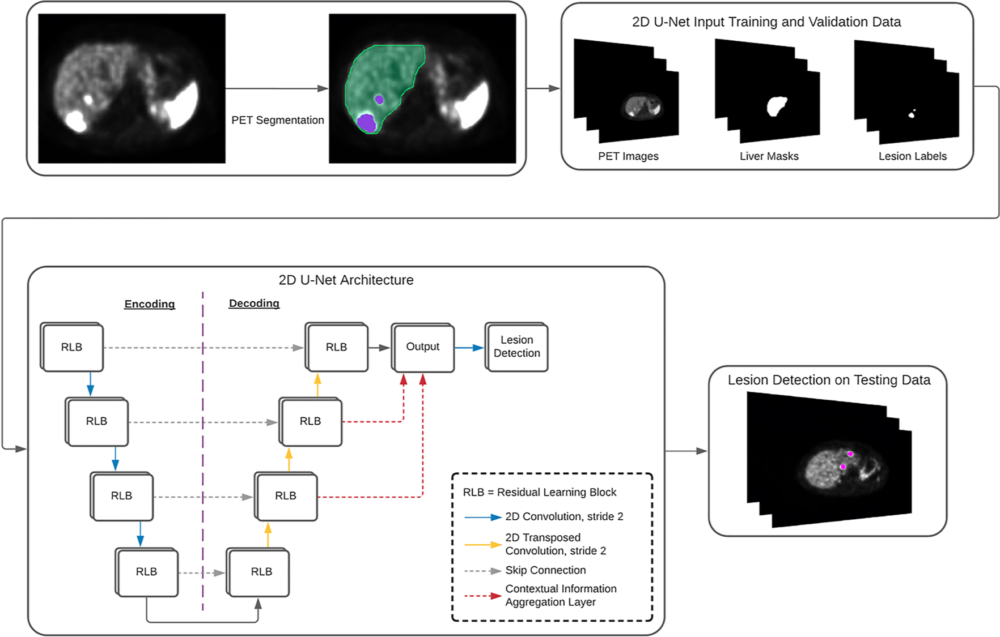
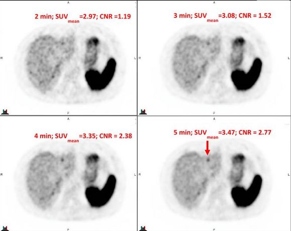
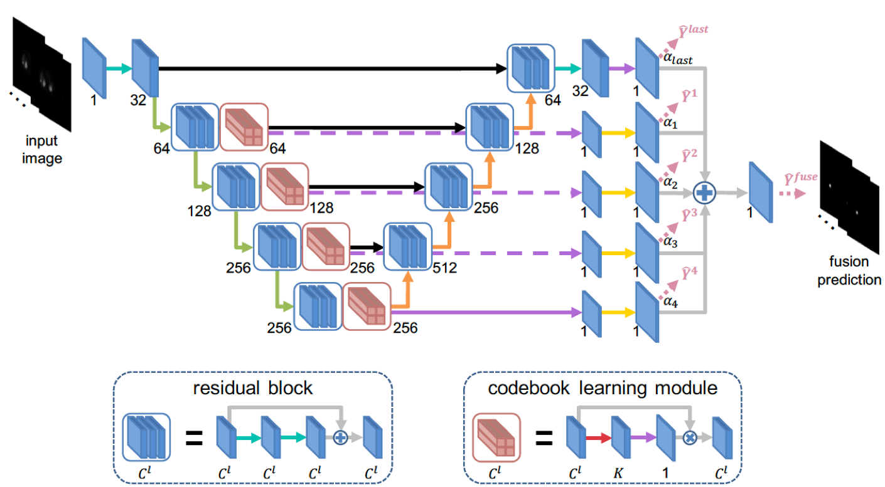
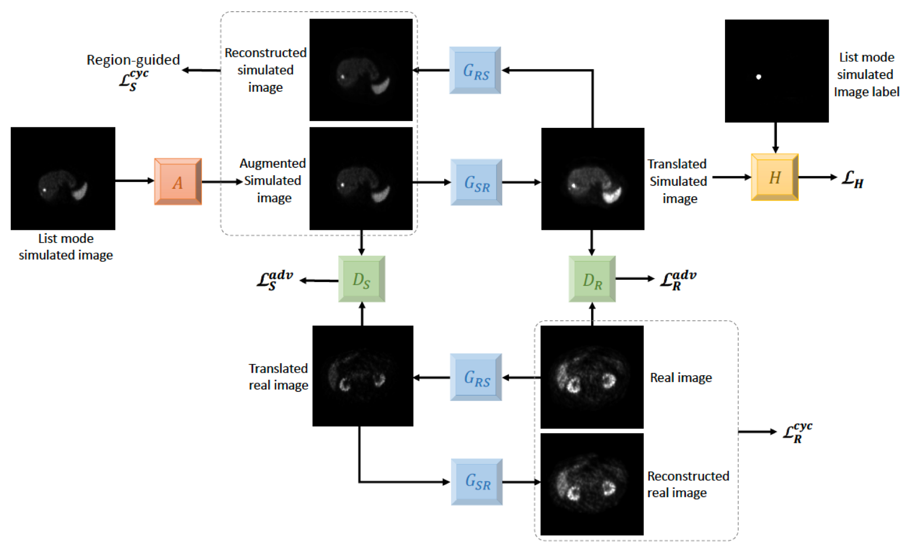
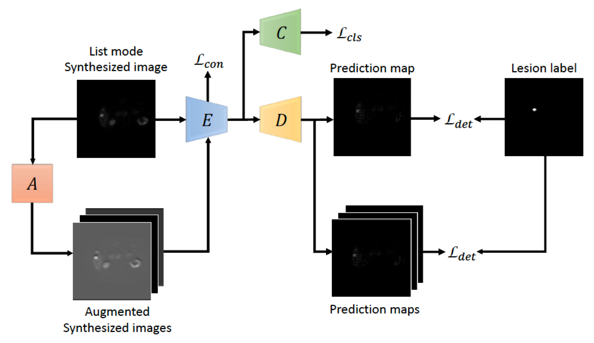
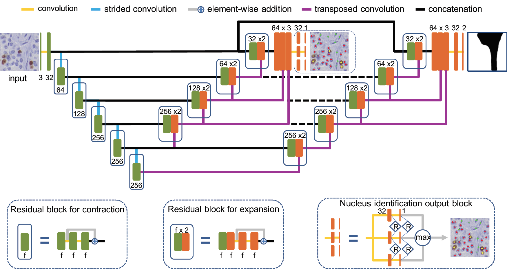
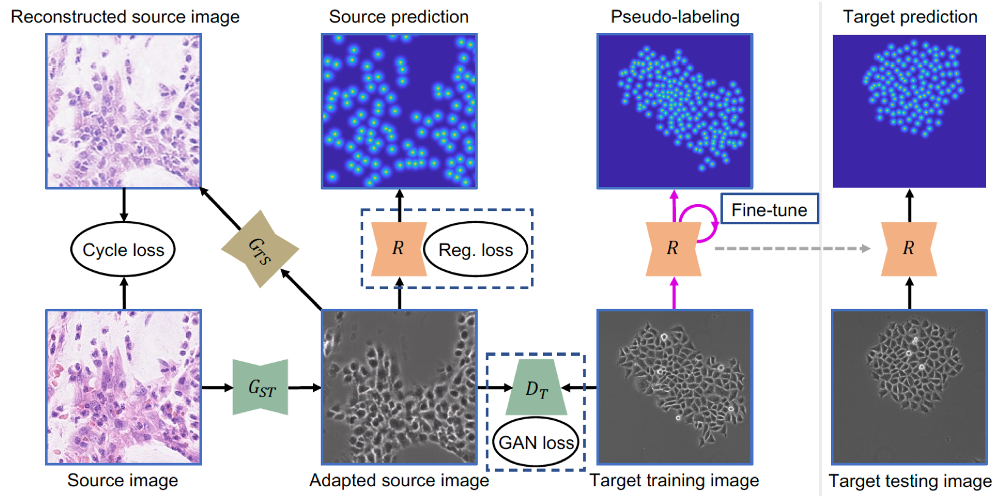
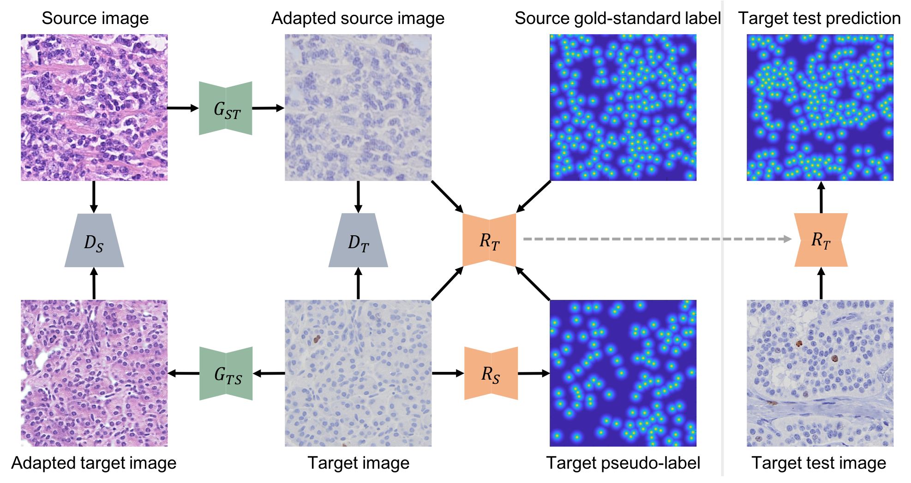

Robust and Generalizable Lesion Quantification in Positron Emission Tomography (PET) Images
68Ga-DOTATATE PET has demonstrated the highest accuracy in detection and staging of gastroenteropancreatic neuroendocrine tumors (GEP-NETs). It is critical to quantify residual 68Ga DOTATATE positive disease burden for therapy development. The central goal of this project is to develop an automated, generelizable lesion detection for livers and whole body with 68Ga-DOTATATE PET imaging.|  |
Automated Liver Lesion Detection in 68Ga DOTATATE PET/CT Using a Deep Fully Convolutional Neural Network Jonathan Wehrend, Michael Silosky, Fuyong Xing, Bennett B. Chin EJNMMI Research, 11(98): 1-11, 2021 Automated Liver Lesion Detection in 68Ga DOTATATE PET/CT: Preliminary Results Using a Deep Learning 3D Fully Convolutional Network Bennett B. Chin, Jonathan Wehrend, Michael Silosky, Christopher Halley, Remy Niman, Katie Moses, Ramesh Karki, Fuyong Xing Journal of Nuclear Medicine, 62 (supplement 1):1184, 2021 |
| | |
|  |
List Mode Reconstructions of 68Ga DOTATATE PET/CT to Predict Contrast-to-Noise Ratio in Hepatic Metastases Bennett B. Chin, Michael Silosky, Timothy DeGrado, Daniel Litwiller, Fuyong Xing Journal of Nuclear Medicine, 63 (supplement 2):4003, 2022 Modeling Contrast-to-Noise Ratio from List Mode Reconstructions of 68Ga DOTATATE PET/CT: Predicting Detectability of Hepatic Metastases in Shorter Acquisition PET Reconstructions Michael Silosky, Fuyong Xing, John Wehrend, Daniel Litwiller, Scott D. Metzler, Bennett B. Chin American Journal of Nuclear Medicine and Molecular Imaging, vol. 13, no. 1, pp. 33-42, 2023 |
| | |
|  |
Location-Aware Encoding for Lesion Detection in 68Ga-DOTATATE Positron Emission Tomography Images Fuyong Xing, Michael Silosky, Debashis Ghosh, Bennett B. Chin IEEE Transactions on Biomedical Engineering, vol. 71, no. 1, pp. 247 - 257, 2024 [Codes] |
| | |
|  |
Learning without Real Data Annotations to Detect Hepatic Lesions in PET Images Xinyi Yang, Bennett B. Chin, Michael Silosky, Jonathan Wehrend, Daniel V. Litwiller, Debashis Ghosh, Fuyong Xing IEEE Transactions on Biomedical Engineering, vol. 71, no. 2, pp. 679 - 688, 2024 [Codes] |
| | |
|  |
Learning with Synthesized Data for Generalizable Lesion Detection in Real PET Images Xinyi Yang, Bennett B. Chin, Michael Silosky, Daniel Litwiller, Debashis Ghosh, Fuyong Xing Proceedings of The 26th International Conference on Medical Image Computing and Computer Assisted Intervention (MICCAI), vol. 14224, pp. 116-126, 2023 [Codes] |
| |
KiNet: A Computerized Method for Ki67 Labeling Index Assessment
The central goal of this project is to develop a computerized method, namely KiNet, for Ki67 labeling (LI) index assessment in Ki67 immohistochemistry stained images of gastrointestinal and pancreatic neuroendocrine tumors (NETs). We use deep neural networks to implement an end-to-end learning method to identify different types of nuclei (i.e., immunopositive tumor, immunonegative tumor and non-tumor) for Ki67 LI measurement.Source codes of KiNet: [KiNet_v1]
|  |
Pixel-to-Pixel Learning with Weak Supervision for Single-stage Nucleus Recognition in Ki67 Images Fuyong Xing, Toby C. Cornish, Tell Bennett, Debashis Ghosh, Lin Yang, IEEE Transactions on Biomedical Engineering, vol. 66, no. 11, pp. 3088-3097, 2019 [Codes] |
| | |
|  |
Adversarial Domain Adaptation and Pseudo-Labeling for Cross-Modality Microscopy Image Quantification Fuyong Xing, Tell Bennett, Debashis Ghosh, Proceedings of The 22nd International Conference on Medical Image Computing and Computer Assisted Intervention (MICCAI), vol. 11764, pp.740-749, 2019 [Codes] |
| | |

|
Generative Adversarial Domain Adaptation for Nucleus Quantification in Images of Tissue Immunohistochemically Stained for Ki-67 Xuhong Zhang, Toby C. Cornish, Lin Yang, Tellen D. Bennett, Debashis Ghosh, Fuyong Xing, JCO Clinical Cancer Informatics, vol. 4, pp.666-679, 2020 [Codes] |
| | |
|  |
Bidirectional Mapping-Based Domain Adaptation for Nucleus Detection in Cross-Modality Microscopy Images Fuyong Xing, Toby C. Cornish, Tellen D. Bennett, Debashis Ghosh, IEEE Transactions on Medical Imaging, vol. 40, no 12, pp. 2880-2896, 2021 |
| |